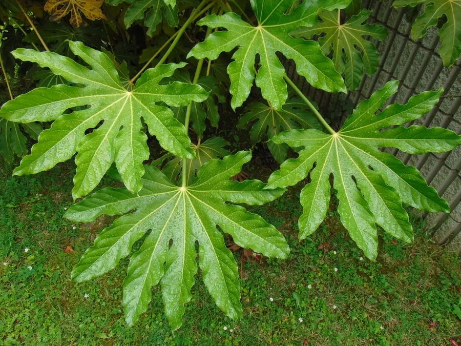

灌木与花木 · 植物界
八角金盘 Fatsia japonica

五加科常绿灌木，叶片掌状 7–9 裂、形如金盘，耐阴性强，是室内外阴处绿化的常见观叶植物。
- 分类
- 门被子植物门纲木兰纲目伞形目科五加科属八角金盘属
- 栖息环境
- 海拔 800 米以下的林下、沟谷与建筑物阴面，极耐阴、喜温暖湿润
- 地理分布
- 原产日本；中国长江流域以南各地广泛栽培
- 保护级别
- 暂无评估；中国未列入国家重点保护野生植物名录
物种志
八角金盘为五加科八角金盘属常绿灌木，高 2–5 米，茎粗壮，髓部白色。叶片大型，掌状 7–9 裂，裂片先端渐尖，边缘具锯齿，表面深绿有光泽，丛生于枝顶。花小，白色，组成顶生的伞形花序，再聚成圆锥状，花期 10–11 月；浆果球形，成熟时黑色，果期翌年 4–5 月。
八角金盘原产日本，中国长江流域以南各地广泛栽培。它极耐阴，喜温暖湿润，适宜疏松肥沃、排水良好的土壤，忌强光暴晒。叶片四季常青、形似金盘，名字取“八方来财、金盘聚宝”之意，常植于建筑物阴面、林下与庭院，也是室内盆栽的常见观叶植物。叶与根皮可入药，有祛风除湿之效；花序在秋季开放，是少见的秋花观叶树种。
形态与习性
- 株高2–5 m，茎粗壮、髓部白色
- 花期10–11 月，白色伞形花序
- 果期翌年 4–5 月，浆果黑色
- 光照极耐阴，忌强光暴晒
- 水分喜湿润，忌积水
- 土壤疏松肥沃、排水良好的壤土
- 主要用途阴处绿化、室内盆栽，叶与根皮入药
趣味知识
- 叶片掌状 7–9 裂，形似张开的绿色手掌，因此又名“八手”。
- 八角金盘极耐阴，是建筑物北侧与林下绿化的常用植物。
- “八角金盘”之名寓意八方来财、金盘聚宝。
- 它在秋季开花，白色伞形花序在观叶植物中较为少见。